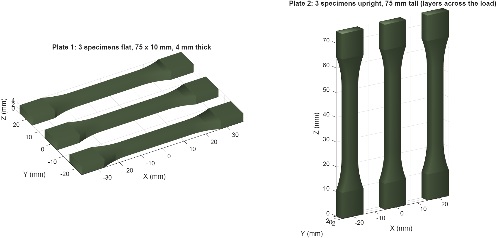
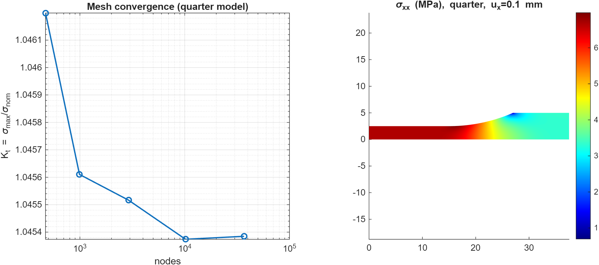

PETG tensile specimen – design, print and simulationPETG-Zugprobe – Konstruktion, Druck und Simulation
After Formnext 2026 I tested a PETG filament sample (Rosa3D PET-G True Matt) on my own FDM printer: tensile specimens in the style of ISO 527-2 type 1BA, designed parametrically, sliced in Cura and printed on an Anycubic Viper – then analysed in MATLAB with a converged FE model and a virtual tensile test.Nach der Formnext 2026 habe ich ein PETG-Filamentmuster (Rosa3D PET-G True Matt) auf meinem eigenen FDM-Drucker getestet: Zugproben im Stil ISO 527-2 Typ 1BA, parametrisch konstruiert, in Cura gesliced und auf einem Anycubic Viper gedruckt – anschließend in MATLAB mit einem konvergierten FE-Modell und einem virtuellen Zugversuch analysiert.
Printed for real, tested virtually: the specimens exist; the tensile test is a simulation with assumed PETG material values – a real test on a tensile testing machine is still to come.Real gedruckt, virtuell geprüft: Die Proben existieren; der Zugversuch ist eine Simulation mit angenommenen PETG-Werkstoffwerten – ein realer Versuch auf einer Zugprüfmaschine steht noch aus.

GoalZiel
Try out a new filament sample from the trade fair in a structured, engineering way: a standard-style specimen, documented print settings, a validated simulation and a clear plan for the physical test.Ein neues Filamentmuster von der Messe strukturiert und ingenieurmäßig erproben: eine normnahe Probe, dokumentierte Druckparameter, eine validierte Simulation und ein klarer Plan für den physischen Versuch.
Design & printKonstruktion & Druck
SpecimenProbe
- ISO 527-2 type 1BA style, parametricIm Stil ISO 527-2 Typ 1BA, parametrisch
- Length 75 mm, neck width 5 mm, R30 transitionLänge 75 mm, Halsbreite 5 mm, R30-Übergang
- Measured thickness about 3.7 mmGemessene Dicke ca. 3,7 mm
- Plate layouts: flat and uprightPlattenlayouts: flach und stehend
Print settings (Cura → Anycubic Viper)Druckparameter (Cura → Anycubic Viper)
- Nozzle 240 °C, bed 70 °CDüse 240 °C, Bett 70 °C
- 0.2 mm layers, 3 walls, 100 % infill0,2 mm Lagen, 3 Wände, 100 % Füllung
- About 6 g of filament and 43 min per plate of three specimensRund 6 g Filament und 43 min je Platte mit drei Proben
- Filament: Rosa3D PET-G True Matt (Formnext sample)Filament: Rosa3D PET-G True Matt (Formnext-Muster)

FEM model & validationFEM-Modell & Validierung
- MATLAB PDE Toolbox, quarter model (double symmetry), plane stress.MATLAB PDE Toolbox, Viertelmodell (doppelte Symmetrie), ebener Spannungszustand.
- Mesh convergence over five meshes: Kt = σmax/σnom ≈ 1.05, change below 0.1 %.Netzkonvergenz über fünf Netze: Kt = σmax/σnom ≈ 1,05, Änderung unter 0,1 %.
- Stiffness check: FE stiffness within 1 % of an analytical strip integral over the varying width w(x).Steifigkeitscheck: FE-Steifigkeit innerhalb 1 % eines analytischen Streifenintegrals über die veränderliche Breite w(x).

Virtual tensile testVirtueller Zugversuch
Force over grip-to-grip travel for the flat specimen, with the measured thickness (about 3.7 mm) and three assumed PETG material sets:Kraft über dem Traversenweg für die flache Probe, mit der gemessenen Dicke (ca. 3,7 mm) und drei angenommenen PETG-Werkstoffdatensätzen:
| SetDatensatz | E [MPa] | σy [MPa] | σu [MPa] |
|---|---|---|---|
| lowniedrig | 1500 | 30 | 35 |
| baseBasis | 2000 | 40 | 45 |
| highhoch | 2400 | 50 | 55 |
Result: break force roughly 620–970 N, depending on the assumed values.Ergebnis: Bruchkraft grob 620–970 N, je nach angenommenen Werten.

Limitations & next stepGrenzen & nächster Schritt
- The material values are assumptions; there is no real tensile test yet.Die Werkstoffwerte sind Annahmen; ein realer Zugversuch fehlt noch.
- Next step: test the printed specimens in a laboratory with a tensile testing machine and compare with the simulation.Nächster Schritt: die gedruckten Proben im Labor auf einer Zugprüfmaschine prüfen und mit der Simulation vergleichen.
What I learnedWas ich gelernt habe
- Turning a trade-fair sample into a documented test: specimen geometry, print parameters, model and test plan.Aus einem Messemuster einen dokumentierten Versuch machen: Probengeometrie, Druckparameter, Modell und Prüfplan.
- Checking a simulation twice – mesh convergence and an independent analytical stiffness – before using its numbers.Eine Simulation doppelt prüfen – Netzkonvergenz und eine unabhängige analytische Steifigkeit – bevor man ihre Zahlen nutzt.
- Being clear about what is assumed and what is measured.Klar trennen, was angenommen und was gemessen ist.